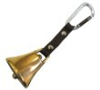

|
▲ 乱数研究のページへ ▲ メインページへ ▲ DQ5RTA記録集 |
（画像提供：Amazon）  |
ここは、ドラクエ5[PS2版]では有名な技、通称「カジノ技」のサポートページです。
技を使うには「出目表」という資料が必要です。ここでは、筆者が作成した資料を公開しています。
なお、「カジノ技」についてよくわからない場合は、まずカジノ技のやりかたからお読みください。
当ページへのリンクはご自由にどうぞ。管理人への連絡も必要ありません。
資料館からダウンロードできます 。PDF形式です。攻略に自由にお使いください。
3つでワンセットです。まずはダウンロードし、実物を見ながら説明を読んでみてください。
■スロット出目表【当たり付近】
ひとつの当たりに1ページをあてています。当たり前後の合計16回転分の出目が載っています。
スロットを回すと、出目は表の中を「下へ」進んでいきます。このまま回すと当たるのかわかります。
載っている当たりは合計45個です。
・5000回転までに存在する、30万枚以上を狙える大当たり(31個)
・1100回転までに存在する、100倍以上が確率3/5以上で出る当たり(14個) 元出稼ぎに使う
■スロット待ち時間表
ふたつの当たりの間の待ち時間を一覧にしています。順番に前から当てる必要がなくなります。
■スロット出目表【検索用】
PC上で文字列検索するための表です。目で出目を見ることを想定していません。
出目15個が、15個の文字列で表現されています。すべて半角文字です。
スロットの画面を、横書きだと思って「上段→中段→下段」の順で読んだ15個の文字列で検索してください。
15文字すべて入力せず、一部分だけでもヒットしますが、似た出目がヒットしやすくなるので注意ください。
表の左右には、直近の当たりまでの回転数と待ち時間が書いてあります。次の当たりが把握できます。
筆者は「Adobe Reader」を使っています。検索のたびに「Ctrl + F」を押すと検索文字列が上書できて便利です。
説明動画もあります → スロット出目表【検索用】の使い方（youtube）
□ ■□□□ □■□□他のスロットの出目表も作ることは可能です。実際に公開されています→そうこ氏のまとめと出目表
大当たりの直前からスロットを開始できれば効率的です。PS2版ドラクエ5では、そんなうまい話が実現できてしまいます。スロットの出目はプレイ開始からの時間によって決まり※、
したがって、出目を完全に予測できるからです。
基本原理は以上のように単純です。厳密ではありませんが、カジノ技をとりあえず使う目的なら、原理に対してはこの程度の認識で十分です。なお、細かい仕様に興味のある方は、
乱数研究のページをお読みください。
※ miya氏が発見 2004年
当たりは膨大な出目の中に点在します。当たり付近の出目は「出目表当たり付近」に載っています。ゲーム画面と出目表を見比べれば、そのまま回すと当たるのか、外れるのかを知ることができます。
また、当たり付近に入るための待ち時間は、「待ち時間表」に載っています。
これらを踏まえて、次のように行動します。
オラクルベリーのカジノに行き、コインを購入します（数枚～数十枚）
オラクルベリーの教会でセーブ → リセット → ロード とし、カジノのスロットに向かいます。
次の1～4を繰り返しつつ、1・10コインスロットで数千枚を当てた後、100・10コインスロットで30万枚を当てます。
１．当たり付近まで待って、スロットを開始する
２．スロットの現在の絵柄を「出目表当たり付近」で探す
３．当たりなら回して当て、外れならスロットを回さない
４．次の当たり付近までの待ち時間を「待ち時間表」で把握してから、スロットをやめる
実際には、待ち時間に出目が進む速度は、待ち時間の過ごし方によって変化します※1。そのため、「待ち時間表」に記載の数値に若干の補正を加えて待つ方が精度は上がります。
しかしそれでも、いろいろな行動をしながら数分もの長時間を待ってスロットに入る場合、当たりの直前に入るのはかなり難しくなります。そこで、一度わざと早め※2に入り、出目を確認して当たりまでの時間を把握し、当たり直前を狙い再度スロットに入る方法が有効になります。この際、比較的広い範囲から出目を探すことになるので、PC上でのファイル検索が有効です。この用途には「出目表検索用」を公開しています。
「スロットに入る→検索する→出目確認する→待ち時間把握」の一連の作業に仮に20秒かかるとします。この20秒はロスですが、待ち時間が長く買い物など複雑な行動をとるのであれば、結果的に取り戻せると考えられます。当たり直前に入ることが可能となるからです。
スロットを回すと1回転には約10秒かかります。直接当たりを狙って6回転前に入ってしまうよりも、20秒を捨てて2回転前に入れるなら結果として速いです。つまり、一発で当たり直前に入れる自信がないならば、検索をはさむ方が無難です。実際にプレイで試してうまく直前に入れない区間に対しては、検索すると良いでしょう。
※1 詳しくは待ち時間のスロット回転速度・乱数消費速度 を参照ください。
※2 3.5秒以上ないと、再度入りなおして当たりに間に合わなくなる可能性が出てきます。
・スロットの出目：海
・当たり ： 宝の島 海に点在する
・出目表当たり付近 ： 宝の島それぞれの地図
・待ち時間表 ： 近くの島々までの方角と距離が書いてある表
・出目表検索用： 海図とGPS
次の島が近くなら海図とGPSは使わなくても島にたどりつけます。そして、そのほうが速いです。
元手稼ぎ（千枚以上）
注意：「元出稼ぎ」の表について |
大当たり（30万枚以上）
|
ふつうの大当たりのチャンスは、5つのパターンのうち1つだけで1000倍が当ります。パターンの制御は1/30秒精度の操作が必要であり困難です。したがって、当たる確率は1/5というように捉えられています。
しかし、いくつかのチャンスは例外です。ここでは3つ取り上げます。
◆ 17α,17β (回転数 3000, 3003)
実質、3/5の確率で、1000倍が当たります。100倍以上が当たる確率は5/5です。
付近の出目が次のようになっているためです。回転数3000直前を狙えばOKです。
3000 □□○■■ ■：1000倍 3001 ○□□□□ ○：100倍 3002 □□□□□ 3003 □■□□□
◆ 23α,23β (回転数 3698, 3710)
回転数が12の差しかなく、パターンがずれているため、両方を「当てる」ことはできません。
（スロットを一度出て、再度入りなおすと最短でも15回転以上が経過するためです）
普通に23αのみを狙えば、1/5＝20%の当たり確率です。しかし工夫すれば両方を「狙う」ことはできます。
23αの5回転手前の回転数3693を狙ってスロットに入り、
→ パターン2 そのまま5回転回して23αを当てる
→ パターン3 そのまま17回転回して23βを当てる ※
→ それ以外 スロットを一度出て再度入りなおすと、23β直前 1/5の確率で当たる
この方法ならば、計算上は52%の確率で当たります。
また、※の場合には16回転のタイムロスを嫌って、スロットを一度出る方法をとるなら、36%になります。
◆ 24 (回転数 3918)
2/5の確率で、1000倍が当たります。
作成に当たり参照したサイトです。この場を借りてお礼申し上げます。
■使用した乱数データ
・最初～124回転 miya氏の乱数データ
・125回転～5001回転 そうこ氏・御茶麒麟氏の乱数データ
■出目表の体裁に関して
・赤ちゅん氏の出目表を参考にしています。
・公開した資料に関して100%の正しさを保証するものではありません。自己責任でご使用ください。
・内容に間違い等発見された場合は、ご連絡いただけると助かります。
・紹介の際には、このページにリンクをお願いします。公開した資料の転載等はご遠慮ください。
|
▲ メインページへ戻る 感想・質問・注文・呪文はこちら⇒掲示板 リンクはご自由にどうぞ |